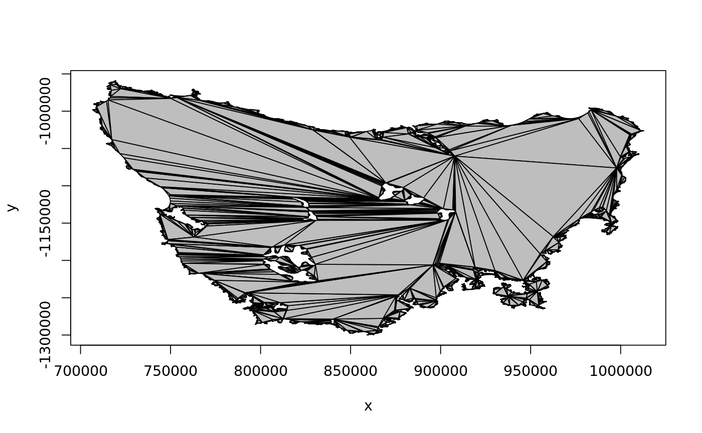

A polygon data set with multiple holes. The data is in 'xy.coords' form, with two columns for 'x_' and 'y_' values, with 'NA' rows separating separate polygon paths. (All but the first path are holes).
This shape represents the mainland island of Tasmania with internal holes for inland waters. The coordinates are in Lambert Conformal Conic centred on 136E and 32S, with standard parallels at 17S and 47S. This shape is taken from a broader region where that local projection was suitable. The
plot(taslakes, pch = ".")lines(na.omit(taslakes))polypath(taslakes, col = "grey")tasnas <- which(is.na(taslakes$x_)) ## this is the "indicate where holes start" convention hole_index <- tasnas - (seq_along(tasnas)-1) taslakes_xy <- na.omit(taslakes) tri_index <- earcut(taslakes_xy, hole_index) rearcut:::plot_tri(taslakes_xy$x_, taslakes_xy$y_, tri_index)rearcut:::plot_tri(taslakes_xy$x_, taslakes_xy$y_, tri_index, col = "grey")# NOT RUN { library(ggplot2) d <- taslakes_xy[tri_index, ] %>% mutate(g = (row_number() -1) %/% 3 ) %>% group_by(g) ggplot(d, aes(x_, y_, group = g)) + geom_path() # }